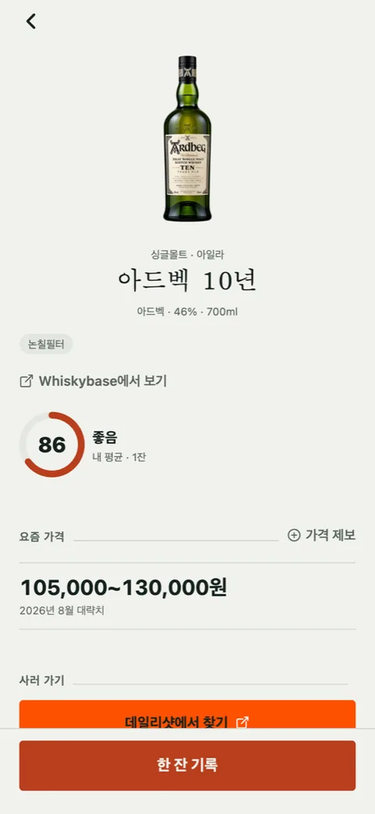

첫잔 [2] — robots.txt를 안 보고 GS샵을 주력으로 썼다
위스키 가격을 어디서 가져올지 하루 종일 뒤졌습니다. 답은 "그런 데이터는 없다"였고, 그 과정에서 넘지 말아야 할 선을 두 번 밟을 뻔했습니다.
뒤늦게 본 한 줄
가격 채널을 더 붙이기 전에 사이트마다 robots.txt를 확인하기로 하고 열두 곳을 훑었습니다. 롯데ON은 파일 자체가 없고, 이마트24와 리쿼샵 자사몰들은 일부 경로만 막고 상품 페이지는 열어 둔 상태였습니다. GS샵(와인25플러스)만 달랐습니다.
User-agent: * / Disallow: /
일반 크롤러 전면 금지. 검색엔진 봇 몇 개만 예외입니다. 문제는 이 파일을 그날 처음 열어 봤다는 것입니다. 그 전 조사에서 GS샵은 편의점 위스키 가격의 주력 출처였습니다. 일괄 수집기를 만들진 않았고 에이전트가 검색 결과를 읽어 오는 정도였지만, 그건 정도의 문제일 뿐입니다. 자동 접근을 하지 말라고 문 앞에 써 둔 곳을, 써 둔 줄도 모르고 다녔습니다. 그날부터 GS샵은 목록에서 뺐습니다.
왜 소매 사이트를 뒤지고 있었나
국내는 주류 통신판매가 금지라 위스키 가격이 일반 이커머스 카탈로그에 쌓이지 않습니다. 합법적으로 가격을 올리는 곳은 국세청 고시로 허용된 스마트오더 사업자(데일리샷·키햐)뿐인데, 그 카탈로그를 통째로 가져오면 데이터베이스권 침해입니다. 사람인 대 잡코리아 판례에서 4.5억 배상이 나온 바로 그 구도입니다.
공공 쪽도 다 봤습니다. 네이버 쇼핑 검색 API는 7월 31일에 서비스가 끝났습니다. 공공데이터포털에 위스키 소매가 데이터셋은 0건이고, '주류 가격' 29건은 부과세액과 물가지수뿐입니다. 한국소비자원 참가격의 주류는 막걸리·맥주·소주 세 가지가 전부입니다. 관세청 통계는 리터당 수입단가까지는 주지만 소매가와 3~5배 차이가 나서 병 하나 기록하는 사람에게는 쓸모가 없습니다.
그래서 문서 첫 줄에 이렇게 적었습니다. 브랜드별 국내 소매가를 주는 무료·합법 피드는 존재하지 않는다. 다시 찾지 않기 위해서입니다.
단일 가격을 포기했다
남은 길은 보도자료, 마트 행사 기사, 리쿼샵 세일 공지 같은 느슨한 출처입니다. 조사는 AI 에이전트 다섯에게 유명 25종을 나눠 맡기고 30분을 줬습니다. 정확한 가격 하나를 찾게 했을 때 숫자가 붙은 건 22종이었지만, 그대로 화면에 실을 수 있는 등급은 6종(24%)이었습니다. 수입사는 "최대 13% 인하" 같은 비율만 발표하고 금액은 내지 않습니다. 금액은 기자가 거래처 공문을 입수한 단독 기사에 간헐적으로 나올 뿐입니다.
목표를 "가격대"로 바꿔 다른 25종을 같은 조건으로 돌리자 쓸 만한 등급이 17종(68%)이 됐습니다. 세 배 가까이 늘었습니다. 밴드는 느슨한 출처 하나로도 하한이나 상한 중 하나가 정해지고, 온라인 23만 원과 편의점 37만 원(로얄살루트 21년) 같은 채널 편차도 폭 안에 들어갑니다.
EValue에서 "적정가"를 버리고 사분위 구간으로 간 것과 같은 결론에 다른 이유로 도착했습니다. 저쪽은 확신을 과장하지 않기 위해서였고, 이쪽은 애초에 하나의 값이 존재하지 않아서입니다.

밴드를 문장으로 주는 곳
그러다 가격 비교 사이트 술한잔을 찾았습니다. 상품 상세 페이지의 meta description에 이런 문장이 그대로 들어 있습니다.
…등록된 25곳의 판매처 정보를 바탕으로 최저가 69,000원부터 최고가 149,800원까지 가격 비교가 가능합니다.
최저가와 최고가, 즉 밴드가 문장 하나에 있고, 정적 HTML입니다. 데일리샷과 키햐가 JS 렌더링이라
읽지 못했던 것과 대비됩니다. robots.txt도 봤습니다. 176줄인데 163줄이 주석 처리된 봇 차단
목록이라 grep -v '^#'로 걸러야 실제 규칙이 보이고, 남는 건 관리자·회원·정책
페이지 금지뿐입니다. 우리가 읽을 /alcohol/ 아래는 허용입니다.
두 번째로 밟을 뻔한 선
첫 버전 스크립트는 술 목록 페이지를 1페이지부터 끝까지 넘기며 사이트의 술을 전부 색인하게 짜여 있었습니다. robots.txt가 허용한 경로니 기술적으로는 문제가 없습니다. 그런데 그건 그 사이트의 카탈로그를 통째로 복제하는 일이고, 아침에 데일리샷을 두고 "하면 안 된다"고 적은 바로 그 행위입니다. 허용된 경로라는 것과 해도 되는 일이라는 것은 다릅니다.
고쳐 짠 방식은 우리 시드에 이미 있는 병만 검색어로 하나씩 조준하고, 이긴 후보의 상세 페이지 한 건만 읽습니다. 저장하는 것도 최저가·최고가와 출처·날짜뿐이고, 사이트의 목록·설명·이미지는 담지 않습니다. 요청 사이에는 1.2~2.2초를 무작위로 쉽니다. 스크립트에는 이렇게 적어 뒀습니다.
# 남의 서버입니다. 너무 줄이지 마세요.
DELAY_MIN, DELAY_MAX = 1.2, 2.2346종, 40분
이름 매칭에서 가장 강한 신호는 도수였습니다. 숙성연수가 양쪽에 있는데 다르면 즉시 탈락(12년과 18년은 값이 배로 갈립니다), 도수가 1.5%p 넘게 다르면 큰 감점. 이 규칙이 시드의 싱글턴 글렌오드 15년(54.2%)이 사이트의 50% 일반판에 붙는 걸 막았습니다.
그래도 오매칭 두 건이 남았습니다. 아카시 화이트 오크가 아카시 블랙에, 글렌그란트 15년 배치 스트렝스가 일반 15년에 붙었습니다. 둘 다 손으로 뺐습니다. 밴드가 다섯 배 넘게 벌어진 네 건은 반영 스크립트가 자동으로 거릅니다. 용량이 다른 병이 섞였을 가능성이 커서입니다.
남긴 규칙
채널을 붙이기 전에 robots.txt를 먼저 본다. 허용된 경로라도 카탈로그를 통째로 가져오지 않는다. 우리 시드에 있는 병만 하나씩 조준한다.
비어 있는 187종
글렌리벳 16년, 듀어스 18년, 보모어 40년은 이름은 정확히 찾았는데 가격이 없습니다. 33종은 판매처가 한 곳이라 하한과 상한이 같습니다. 채워지지 않은 187종은 수입사 보도자료를 손으로 뒤지는 옛 방식으로 갑니다.
그리고 가격은 늙습니다. 오늘 채운 159개도 한두 달 뒤엔 다시 돌려야 하는데, 그걸 언제 어떻게 할지는 아직 정하지 않았습니다.

Seok
연구하면서 개발합니다. 배터리 재료를 원자 단위에서 계산하는 법을 바닥부터 배우는 중입니다. → 글 더 보기